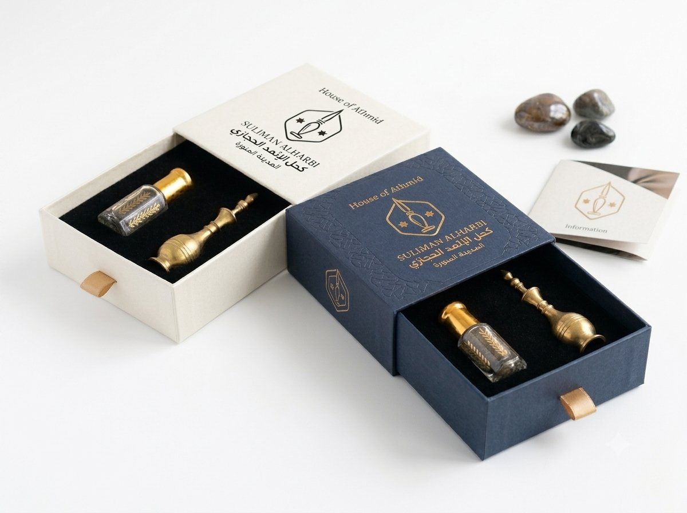

قلّ أن تجد منتجاً تجميلياً واحداً يحمل من الحضور الديني والتاريخي ما يحمله كحل الإثمد. فهو حاضر في كتب الحديث والسنن، وحاضر في كتب "الطب النبوي" التي دوّنها العلماء لاحقاً، وحاضر أيضاً في العادات اليومية لملايين البيوت العربية. لكن هذا الحضور الواسع جعل كثيراً من المعلومات عنه تختلط: فما الثابت فعلاً في الروايات، وما الذي أضافته الثقافة الشعبية عبر القرون؟ هذا المقال محاولة لقراءة أمينة، بلا مبالغة وبلا تهوين.
الرواية الأساسية: حديث ابن عباس رضي الله عنهما
الأصل الذي يستند إليه الحديث عن الإثمد والسنة النبوية هو ما رواه الترمذي وابن ماجه وأبو داود من طريق ابن عباس رضي الله عنهما، أن النبي صلى الله عليه وسلم قال ما معناه: "اكتحلوا بالإثمد عند النوم، فإنه يجلو البصر وينبت الشعر". هذا هو النص الذي يتكرر في أغلب ما يُكتب عن الموضوع، وهو أصل الربط بين الإثمد وعادة الاكتحال قبل النوم تحديداً.
ماذا قال علماء الحديث عن هذه الرواية؟
من الأمانة العلمية أن نذكر أن أهل الحديث تفاوتوا في الحكم على إسناد هذا الحديث. بعضهم ضعّف السند لعلة فيه، بينما قوّاه آخرون بمجموع طرقه وشواهده، ومن ذلك تحسين الشيخ الألباني رحمه الله له في بعض كتبه اعتماداً على تعدد الروايات. هذا النوع من الاختلاف طبيعي تماماً في علم الحديث، ولا يعني تناقضاً أو تشكيكاً في أصل استخدام النبي صلى الله عليه وسلم للكحل، فذلك ثابت من طرق أخرى أيضاً، بل يتعلق الخلاف تحديداً بألفاظ إضافية مثل "يجلو البصر وينبت الشعر"، وهي التفصيلة التي ينبغي التعامل معها بحذر أكبر من أصل الفعل نفسه.
الإثمد تحديداً: لماذا هذا النوع من الكحل؟
عرف العرب قديماً أنواعاً متعددة من الكحل، إلا أن الإثمد، وهو حجر معدني طبيعي (من مركبات الأنتيمون) يُطحن حتى يصبح مسحوقاً ناعماً أسود أو رمادياً داكناً، كان الأشهر والأكثر تداولاً بينها، حتى إن كثيراً من كتب اللغة والطب القديم كانت تستخدم كلمة "الكحل" وتقصد بها الإثمد تحديداً لشدة شهرته. وهذا يفسر لماذا ارتبط اسم الإثمد بالذات، لا أي نوع كحل آخر، بالروايات النبوية وبكتب الطب النبوي التي تلتها.
الطب النبوي: علم لاحق يجمع لا ينشئ
من المفيد توضيح أن "الطب النبوي" ليس نصاً نبوياً واحداً متكاملاً، بل هو مصنّفات ألّفها علماء لاحقون، أشهرهم الإمام ابن القيم الجوزية في كتابه المعروف "زاد المعاد في هدي خير العباد" وقسمه الطبي المستقل المعروف بـ"الطب النبوي"، وكذلك ما أورده ابن حجر العسقلاني وغيرهم في شروح الحديث. هذه المصنفات جمعت ما ورد من توجيهات نبوية متعلقة بالصحة والعلاج والغذاء، وحاولت شرحها وربطها بما كان معروفاً من طب عصرها. وهذا يعني أن قسماً منها إرشادات عامة أثبت الزمن والعلم صحتها كالاعتدال في الطعام والنظافة، وقسماً آخر تفصيلي يبقى مجال بحث واجتهاد بين أهل الحديث والطب معاً، ومنه بعض ما ورد حول تفاصيل تأثير الإثمد على البصر تحديداً.
هل يقوّي الإثمد النظر فعلاً؟ موقف الطب الحديث
حتى الآن، لم يثبت في الطب الحديث أن وضع أي نوع من الكحل، بما فيه الإثمد الطبيعي النقي، يحسّن حدة الإبصار أو يعالج ضعف النظر بالمعنى الإكلينيكي؛ فحدة الرؤية يتحكم بها العصب البصري والعدسة وشبكية العين، ولا علاقة مباشرة لمستحضر خارجي بها. الأصوب أن يُفهم الجانب المتعلق بجلاء البصر ضمن سياقه التاريخي واللغوي القديم، لا كوعد طبي حرفي، وأن يُنظر لفوائد الإثمد الثابتة والملموسة، كحمايته الخفيفة من الغبار والوهج ولونه الداكن الطبيعي الآمن على العين، بوصفها الفائدة الحقيقية التي يقدمها اليوم.
لماذا يستمر إقبال الناس عليه رغم هذا التفاوت العلمي؟
لأن الدافع وراء استخدام كحل الإثمد اليوم مزيج من عدة أمور، لا الجانب الطبي وحده. جزء منه اقتداء بعادة نبوية محببة إلى النفس، وجزء آخر ارتباط بموروث الأجداد وهوية ثقافية عريقة، وجزء ثالث فوائد تجميلية حقيقية يلمسها كل من جرّبه: قوام ناعم، لون داكن طبيعي، وخلو من الإضافات الكيميائية. هذا المزيج مقبول تماماً ومفهوم، طالما بقي واضحاً أن الفائدة التجميلية والوقائية شيء، والادعاء بأنه علاج طبي شامل شيء آخر مختلف تماماً.
هل هو خاص بالرجال أم يشمل النساء والأطفال أيضاً؟
الخطاب في الحديث موجّه أصلاً للرجال، والنبي صلى الله عليه وسلم رجل يخاطب أصحابه، لكن عادة الاكتحال بالإثمد امتدت تاريخياً لتشمل النساء والأطفال أيضاً في المجتمعات العربية والإسلامية، بوصفها عادة عناية وتجميل عامة لا تقتصر على فئة واحدة. هذا امتداد طبيعي للعادة عبر الزمن، ولا يخالف جوهر ما ورد، خصوصاً أن الفوائد التجميلية والوقائية للكحل لا تتعلق بجنس مستخدمه.
ضوابط عملية عند الاقتداء بهذه السنة
- التأكد أن الكحل المستخدم إثمد طبيعي نقي فعلاً، لا مادة مقلَّدة تُنسب زوراً للسنة بينما هي أصباغ كيميائية قد تضر العين.
- تجنّب تصويره كعلاج طبي مؤكد يغني عن مراجعة طبيب العيون عند وجود مشكلة حقيقية في النظر.
- مراعاة الاستخدام الآمن دائماً: عود أو مكحلة نظيفة خاصة بالمستخدم، ووضع الكحل على حافة الجفن الخارجية.
- تذكّر أن نية الاقتداء بالسنة لا تتعارض مع الحرص الصحي؛ فكلاهما يخدم الآخر إن أُحسن التطبيق.
كحل إثمد أصلي يليق بهذه العادة العريقة
مسحوق معدني طبيعي 100% من المدينة المنورة، أسود ناعم غير متكتل، مع مكحلة هدية في كل طلب.
🛒 اطلبه الآن من أمازونخلاصة
يجمع كحل الإثمد بين أصل ثابت في استخدام النبي صلى الله عليه وسلم للكحل، وتفاصيل إضافية في اللفظ تفاوت فيها العلماء بين تصحيح وتضعيف، وهذا لا يقلل من قيمة العادة بل يضعها في موضعها الصحيح: سنة نبوية جميلة ذات فوائد تجميلية ووقائية حقيقية، لا بديلاً عن الطب عند الحاجة الفعلية. ولمن أراد التعرف أكثر على الفوائد الملموسة أو الطريقة الصحيحة للاستخدام، يمكن مراجعة فوائد كحل الإثمد للعيون وطريقة استخدام كحل الإثمد خطوة بخطوة، أو التعرف على تفاصيل كحل إثمد أصلي من المدينة المنورة في الصفحة الرئيسية.